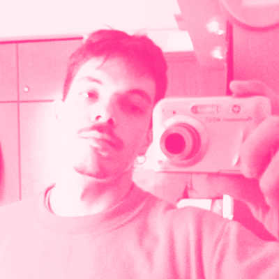

photos
In early December 2025, I went on a solo trip to London for 6 days (thank you Christina for hosting me) and a sense of alienation was constantly mixing with the joy and excitement of the trip.
This is an attempt to revisit my experiences and feelings through a collection of photos I took with my digital camera while wandering around London.
website
This website was built with plain HTML, CSS and vanilla Javascript. Its design is inspired by brutalist web design principles that you can find here. I tried to keep everything simple, accessible and optimized, using minimal decorations and animation.
This is my second web project so if you have any constructive feedback I’d love to hear it :)
me

I am yorgos, I like building nice things, coding, taking pictures, analysing environmental policy, identifying species, painting, planting, watering, uprooting invasives, deleting my social media once in a while and screaming loud in my car while driving. I want to learn how to make nice websites.
You can contact me at grgsnizamis@gmail.com.